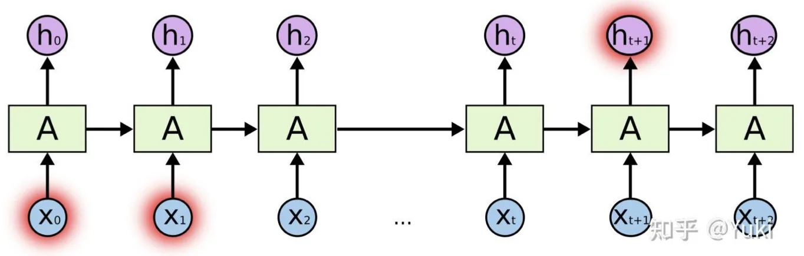

计算机视觉 · 第 7 章 循环神经网络
7.5 长程依赖问题与改进方案
上一节推导 BPTT 时，误差项 δt,k 里出现了一个沿时间的连乘。本节要讲的就是这个连乘带来的后果：随着回传的距离变长，梯度要么爆掉、要么消失，于是网络实际上只能学到短期依赖——这就是长程依赖问题。课件把它拆成两半来处理：先针对梯度爆炸，再针对梯度消失，最后给出通行的解决方案：门控机制。
1. 梯度消失与梯度爆炸
回顾 7.4 节的结果：误差项 δt,k = ∏i=kt−1(diag(f′(zi)) UT) · δt,t，梯度里因此含有一个随距离 (t − k) 增长的因子。课件把这个因子的量级记为 γt−k，于是两种极端情况一目了然：
- 若 γ > 1，当 t − k → ∞ 时，γt−k → ∞，梯度变得很大，引起梯度爆炸问题；
- 若 γ < 1，当 t − k → ∞ 时，γt−k → 0，梯度变得很小，引起梯度消失问题。
两种毛病的表现不同：梯度爆炸会让参数一步更新得过大，训练直接发散（损失变成 NaN）；梯度消失则相反——远处的时刻几乎收不到任何有效的更新信号，参数原地不动。
课件由此给出结论：由于梯度爆炸或消失问题，实际上只能学习到短周期的依赖关系。这就是所谓的长程依赖问题。
2. 长程依赖问题
什么叫「长程依赖」？课件的定义是：如果时刻 t 的输出 yt 依赖于时刻 k 的输入 xk，当间隔 t − k 比较大时，简单循环神经网络很难建模这种长距离的依赖关系，称为长程依赖问题。

把这件事放在语言里看会更具体。读一句话时，前面出现的某个词可能决定后面很远的某个词该怎么理解；如果网络只能记住三五个时刻以内的信息，这种跨度较大的关联就学不到。这也正是 7.1 节那个词性分类例子留下的尾巴：判断当前词要看上下文，而上下文可能离得很远。
3. 针对梯度爆炸：权重衰减与梯度截断
两类问题里，梯度爆炸相对好办——只要把参数或梯度「压小」就行。课件给了两种做法：
- 权重衰减：给参数增加 L1/L2 范数的正则化项来限制参数的取值范围，从而使得 γ ≤ 1；
- 梯度截断：当梯度的模大于一定的阈值时，截断为一个较小的数。
两者的思路不同但目标一致：权重衰减是事前约束参数的规模，让连乘因子从一开始就不会大于 1；梯度截断是事后补救，一旦某次算出来的梯度太大，就按比例把它缩回去，避免一步更新把训练带偏。
不过要留意，这两种方法都只能治「爆炸」，对「消失」无能为力——把梯度往小里压，恰恰是梯度消失更严重的方向。
4. 针对梯度消失：改循环边
为了治消失，得从结构上动手。课件给了两条改动思路，都围绕着那条循环边。
（1）循环边改为线性依赖关系
第一条思路是把状态之间的传递改成线性的：原来的 ht = f(U ht−1 + W xt + b) 改为 ht = ht−1 + g(xt; θ)，其中 g(·) 是一个非线性函数，θ 为参数。此时状态之间的路径变成「ht−1 加一项」，求导时不再需要连乘一串矩阵，梯度可以顺畅地往回传。
代价课件也写明了：这样做丢失了神经元在反馈边上的非线性激活性质，因此也降低了模型的表示能力。换句话说，梯度是通畅了，但网络表达复杂规律的本事也被削掉了一块。
（2）增加非线性
第二条思路是在线性传递的基础上把非线性补回来：让新增的那一项同时看到当前输入和上一时刻的状态：ht = ht−1 + g(xt, ht−1; θ)。
但课件同样说明了它的局限：这样仍然存在梯度爆炸问题以及记忆容量问题。所谓记忆容量问题，是指隐状态 ht 可以存储的信息是有限的：随着记忆单元存储的内容越来越多，其丢失的信息也越来越多。用一个固定维度的向量去承载任意长的历史，本身就会「装不下」。
5. 门控机制：Gated RNN
既然「全记」会爆、「硬改」会损失表达能力，那就让网络自己决定记什么、忘什么。课件给出的总结是：为了改善循环神经网络的长程依赖问题，一种非常好的解决方案是引入门控机制来控制信息的积累速度，包括有选择地加入新的信息，并有选择地遗忘之前积累的信息。这一类网络称为基于门控的循环神经网络（Gated RNN）。
课件列出的两种门控网络，就是接下来两节的主角：
- 长短期记忆网络（Long Short-Term Memory，LSTM），见 7.6 节；
- 门控循环单元网络（Gated Recurrent Unit，GRU），见 7.7 节。
它们的共同点在于：用一组取值在 0 到 1 之间的「门」去控制信息流的比例，从而让某条路径上的梯度可以近乎不衰减地传很远——这正是缓解梯度消失的关键。
本节小结
- BPTT 的误差项含有一个随距离增长的连乘因子 γt−k：γ > 1 时梯度爆炸，γ < 1 时梯度消失；两者都导致网络实际上只能学习短周期的依赖关系。
- 长程依赖问题的定义：时刻 t 的输出 yt 依赖时刻 k 的输入 xk，当间隔 t − k 较大时，简单循环神经网络很难建模这种关系。
- 针对梯度爆炸：权重衰减（加 L1/L2 正则项限制参数范围，使 γ ≤ 1）与梯度截断（梯度模超过阈值就截断为较小的数）。
- 针对梯度消失：把循环边改成线性依赖 ht = ht−1 + g(xt; θ)（代价是丢失反馈边上的非线性，表示能力下降），或增加非线性 ht = ht−1 + g(xt, ht−1; θ)（仍有梯度爆炸与记忆容量问题）。
- 通行方案是门控机制：有选择地加入新信息、有选择地遗忘旧信息，这类网络称为 Gated RNN，代表是 LSTM 与 GRU。